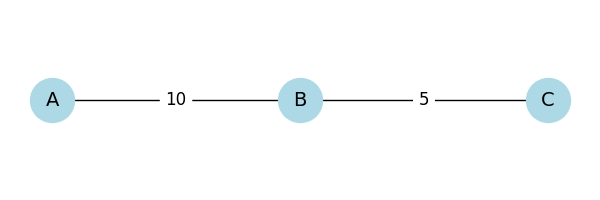

Equivalent Resistance Using Graph Theory
Problem Overview
Calculating the equivalent resistance in electrical circuits is essential for designing and analyzing efficient systems. While traditional methods work well for simple circuits, graph theory offers a powerful tool to handle complex resistor networks, especially with nested or looped configurations.
Motivation
- Traditional circuit analysis relies on identifying series and parallel components.
- This becomes difficult in large or irregular circuits.
- Graph theory provides a systematic, programmable approach using nodes ( junctions ) and edges ( resistors ).
- Enables automation, visualization, and scalability.
Circuit as a Graph
- Nodes = electrical junctions
- Edges = resistors (with weight = resistance)
- Goal: Reduce graph to one equivalent edge between input and output nodes

Algorithm Description
Graph Simplification Strategy
- Detect series connections: Nodes with degree 2 (except terminals)
- Detect parallel connections: Multiple edges between same nodes or cycles
- Reduce step by step:
- Combine series: \(( R_{eq} = R_1 + R_2 )\)
- Combine parallel: \(( \frac{1}{R_{eq}} = \frac{1}{R_1} + \frac{1}{R_2} )\)
## Examples & Visualizations
Example 1: Series Circuit
 Two resistors are connected end-to-end:
- A → B : 10 \(Ω\)
- B → C : 5 \(Ω\)
They are in series, so the equivalent resistance is:
Example 2: Parallel Circuit
Two resistors are connected between the same nodes A and B:
- A ↔ B : 10 \(Ω\)
- A ↔ B : 20 \(Ω\)
They are in parallel, so:
Example 3: Nested Configuration

We have two paths from A to C :
- Path 1 : A → B → C
- AB = 5 \(Ω\), B C = 5 \(Ω\) → total = 10 \(Ω\)
- Path 2 : Direct A → C = 10 \(Ω\)
These two 10 \(Ω\) paths are in parallel, so :
Pseudocode
```pseudo function simplify_circuit(graph, input_node, output_node): repeat: for each node in graph: if node is not input/output and has degree 2: merge series resistors for each pair of nodes with parallel edges: combine using parallel rule until no more simplifications return resistance between input_node and output_node